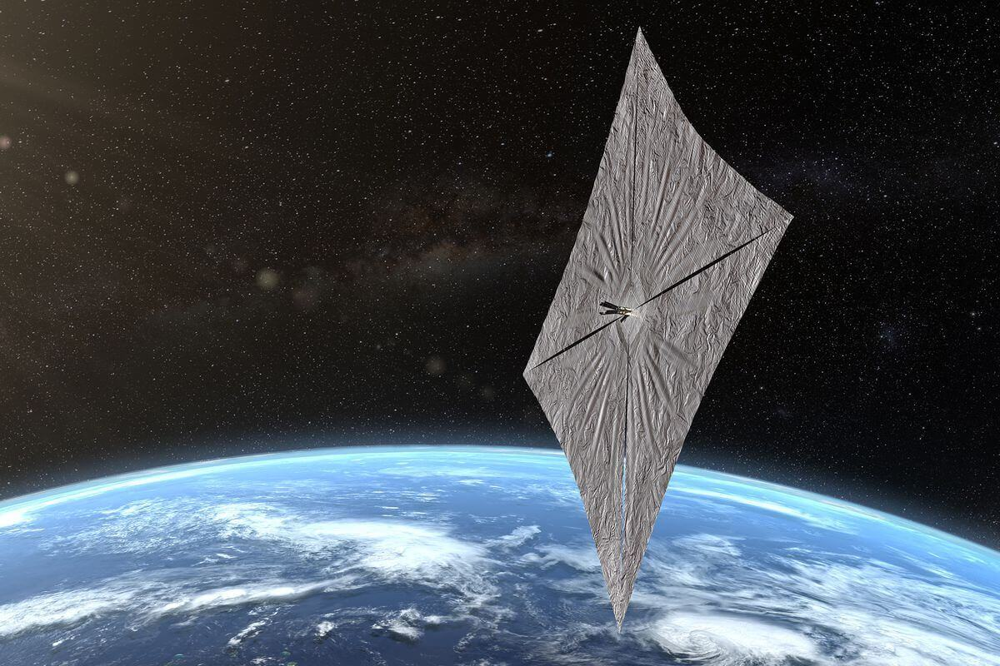

SPACETASTIC
SPACE IS
INTRODUCTION
The solar system which is the nearest to us is about 4 light years away from us, there are three stars in that solar system, of which, the nearest to us is Proxima Centauri and it also have some planets, of which the planets which have very similar conditions like our planet Earth is Proxima Centauri b. You might be thinking that it is very near to us but not. The fastest human-made spacecraft, New Horizons had an speed of about 23 kilometers per second by this speed it can easily cover the length of equator of Earth in just half-an-hour. But this speed is very very less. If we send a spacecraft at this speed to Proxima Centauri b, it would take about 70,000 (seventy thousand) years to reach there, and it not possible for us to wait for 56,000 years! A spacecraft called Solar Parker Probe is launced towards the Sun. In the year 2025, it will be on it's closest approach to Sun, and at that time, it's estimated speed is about 200 kiometers per second, which is almost 12 times faster than the Voyager-1, but still with this speed, it would still take about 6,300 (six thousand three hundred) years to reach Proxima Centauri b. To prevent this big time gap, a mission called Breakthrough Starshot Mission will be launced in the year 2036.
LIGHT SAIL
If we send a normal spacecraft to proxima centauri b, then to make it travel at a very high speed, we need a large amount of fuel, a strong outer covering to protect it from the extreme cold and extreme hot temperatures of intersteller space, and it also has many parts which makes it very much heavy and this heaviness is the main reason for anything to slow down. On the other hand, a light sail is very very light just about one kilogram! Just like a sail ship sails by blowing wind, similarly, a light sail also sais by light particles. Since billions and billions of light particles hit the sail, it pushes the sail and causes it to move. Now let's discuss the structure of a light sail. The sails of the light sail are made of very thin carbon fibre(see in the above picture), it's width is only about the size of some atoms! at the center of the light sail, there is a small system in which all the functionality of the light sail exists, like, camera, sensors, computer programs, etc etc.
BREAKTHROUGH STARSHOT MISSION

Now let's come to the main topic. The normal speed of a light sail is about 67 (sixty seven) kilometers per second, by this speed it would reach proxima centauri in still many years. But there is something different in the Breakthrough Starshot, the normal light sails we launch, is accelerated by the Sun's light which is very scattered, but in this mission we will use concentrated beams, which will be redirected from Earth as you can see in the above animation. These beams will make the light sail move at 20% speed of light! That is about 60,000 kilometers per second!! By travelling in this speed, breakthrough starshot will reach Proxima Centauri b in just twenty years!! But it is not simple as you think. By travelling in such a high speed, the whole light sail can be destroyed even if a nanometer sized particle hits the light sail, so to prevent this, we will not just launce one light sail, instead we will launce thousands of light sail so that even one is destroyed, then other light sails will be available to complete the journey. There is one more problem, in such a high speed, it is impossible to stop the light sail since it does not have any propulsion system to slow down it's speed. So we will get only some nanoseconds time to click the picture. But it is still not simple as you think. We know that light also have some speed and with this speed, it will take 4 years to reach Proxima Centauri b, and radio signal also have almost the same speed as light and if we send a signal to the light sail to click picture, it will reach our light sail in another 4 years, and in this 4 years, the light sail woud have left Proxima Centauri. So we have to send the signal to click photos 4 years before the arriving of light sail to Proxima Centauri and this is also the reason why we will send thousands of light sails, so that even one is wrong then others are there to click the photos.
Hope you like the artilce please comment below!!